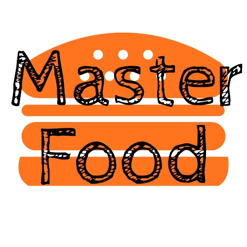
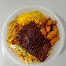

<ion-header>
  <ion-toolbar class="">
    <ion-item class="" lines="none">
      
      <ion-input type="text" class="seach"></ion-input>
      <ion-button slot="end" size="" fill="clear">
        <ion-icon name="search-outline"></ion-icon>
      </ion-button>
      <ion-button slot="end" size="" fill="clear">
        <ion-icon name="create-outline"></ion-icon>
      </ion-button>
    </ion-item>
  </ion-toolbar>
</ion-header>
<ion-content>
  <div class="flex-center">
    <ion-card class="">
      <ion-item class="" lines="none">
        <span>Ovo</span>
        <ion-icon name="star-outline" slot="end"></ion-icon>
        <ion-icon name="bag-add-outline" slot="end"></ion-icon>
      </ion-item>
      <ion-card-content class="">
        <div class="">
          
          <ion-item class="" lines="none">
            <span>Percorremos o planeta em busca do que achamos ser 50 das mais deliciosas comidas já criadas. Encha seus
              olhos e tente não babar enquanto revelamos algumas das melhores comidas do mundo que podem ajudar você a
              planejar uma viagem:</span>
          </ion-item> 
  
        </div>
            
              <ion-button size="" color="success" slot="end">
                Add ao carrinho
              </ion-button>
  
      </ion-card-content>
  
    </ion-card>
  </div>
  
</ion-content>